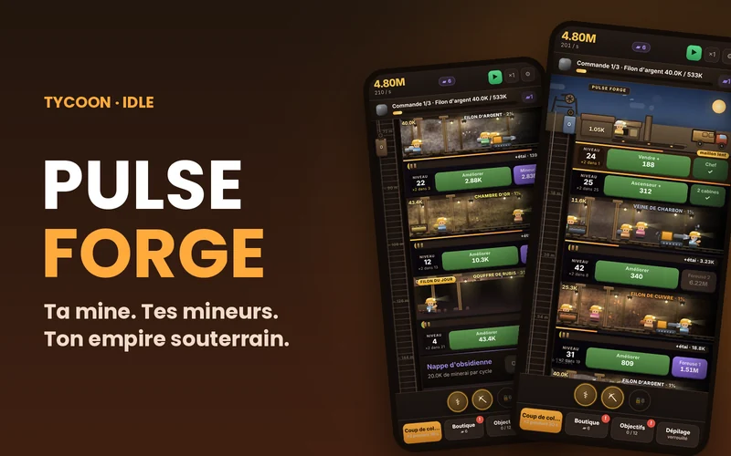

Astuces · Pulse Forge
Pulse Forge : le guide pour bâtir la mine la plus riche
Pulse Forge a l'air simple : on touche le mineur et l'argent tombe. Mais la mine ne tourne vraiment vite que si toute la chaîne suit, et le terrain finit toujours par pousser. Voici comment progresser sans gaspiller ton argent ni perdre de galerie.

Pulse Forge
Jouer maintenant1. La chaîne : mineur, ascenseur, camion
Le minerai suit toujours le même chemin. Les mineurs l'abattent et remplissent le wagonnet de leur galerie. L'ascenseur descend le chercher et le remonte au dépôt. Le camion le vend en surface. Ton revenu par seconde est celui du maillon le plus lent : une galerie niveau 50 ne sert à rien si l'ascenseur est niveau 5.
- Le jeu signale le « maillon lent » en surface : c'est lui qu'il faut améliorer en priorité.
- Si le dépôt déborde, c'est la vente (le camion) qui bloque. Si les wagonnets restent pleins, c'est l'ascenseur.
- La 2e cabine d'ascenseur double le débit vers la surface : achète-la dès que tes galeries profondes produisent beaucoup.
2. Les chefs : la mine qui tourne sans toi
Au début, il faut toucher chaque maillon à la main. Le premier vrai cap, c'est d'embaucher un chef pour la galerie de charbon, l'ascenseur et la vente : ensuite tout tourne seul, même quand le jeu est fermé. Tes chefs font tourner la mine pendant ton absence et tu récupères les gains en revenant.
Pour chaque nouvelle galerie, le chef coûte cher au départ, mais il rapporte vite. Une galerie sans chef ne travaille que quand tu la touches.
3. Les paliers ×2 tous les 25 niveaux
Chaque galerie double sa production aux niveaux 25, 50, 75, 100… Le petit compteur « ×2 dans … » sous le niveau t'indique combien d'améliorations il reste. Quand tu es à quelques niveaux d'un palier, c'est presque toujours le meilleur achat.
- Les mineurs supplémentaires (jusqu'à 4 par galerie) multiplient la production de la galerie.
- La foreuse donne un gros bonus, mais elle coûte cher : garde-la pour tes meilleures galeries.
- Ouvrir une nouvelle galerie vaut souvent plus que 20 niveaux sur l'ancienne : chaque filon rapporte bien plus que le précédent.
4. La poussée et les étais
Plus une galerie travaille, plus la roche pousse. La jauge colorée sous chaque galerie passe du vert au rouge. À 100 %, la galerie s'effondre : elle s'arrête et il faut la déblayer. Pose des étais pour faire redescendre la poussée avant qu'elle n'arrive au rouge.
- Surveille surtout tes galeries profondes : ce sont celles qui rapportent le plus, donc celles qu'il ne faut pas perdre.
- Le Boiseur, premier chef d'équipe (à partir de 2 galeries), reprend le toit de toutes les galeries d'un coup.
- L'Abatteur (4 galeries) donne ×3 pendant 20 secondes, le Rouleur (6 galeries) vide tous les wagonnets.
5. Ce qui change chaque jour
- Le filon du jour : une galerie produit ×3, mais le terrain y pousse 2,5 fois plus fort. Rentable, à condition de poser des étais.
- Les commandes : trois par jour, payées en lingots. Livre-les : les lingots sont la ressource la plus précieuse du jeu.
- Au lever du jour, un événement t'attend parfois (éboulement, filon riche, venue d'eau…) avec deux choix : lis bien les effets avant de décider.
- Revenir plusieurs jours d'affilée augmente ta série et la prime du jour.
6. Le Coup de collier
Le bouton Coup de collier double toute la production pendant 30 secondes, puis il se recharge. Utilise-le juste avant un gros achat. Le bonus ×2 pendant 4 heures, proposé contre une publicité, est le plus rentable si tu laisses la mine tourner longtemps.
7. Revendre la mine et le dépilage
Revendre la mine te fait repartir de zéro, mais tu gardes tes lingots, et chacun ajoute +2 % de production pour toujours. Fais-le quand ta progression ralentit nettement : la deuxième partie va beaucoup plus vite.
Quand la mine atteint le fond, le dépilage se débloque : tu arraches tes propres étais en partant du fond, chacun libère une fortune et fait tomber la galerie. Le front d'effondrement remonte tout seul : avance galerie par galerie sans te faire rattraper. Les lingots gagnés achètent des avantages permanents dans la Boutique.
8. L'ordre conseillé
- Améliore le charbon jusqu'à pouvoir ouvrir le cuivre.
- Embauche les chefs du charbon, de l'ascenseur et de la vente.
- Vise les paliers ×2 (niveau 25) et ouvre les galeries une par une.
- Garde un œil sur la poussée et le maillon lent.
- Livre les commandes du jour et accumule des lingots.
- Revends la mine quand ça ralentit, puis lance le dépilage.